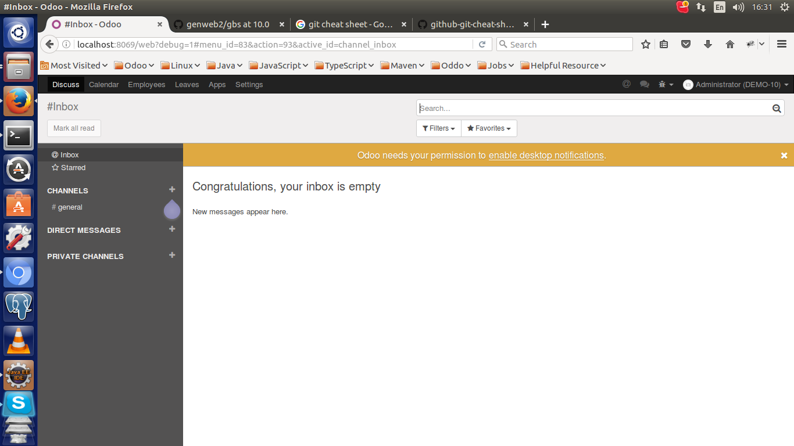

Hide Desktop Notification Link
This module hides the Desktop Notification link at the top of login screen.
Installation
Go to Apps
Search by module name Hide Desktop Notification Link or
by module technical name hide_desktop_notification_link
Click install button
Usage
When this module is installed the link "Desktop Notification"
will be hidden in the login screen.
The image shows the resulting login screen.
1. Before install this module
Hide Desktop Notification Link.

2. After install this module
Hide Desktop Notification Link.